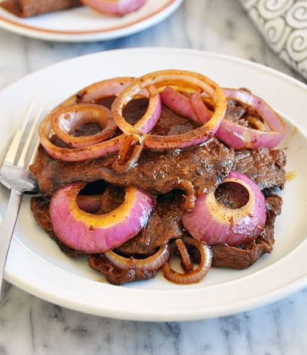

This homemade bistek recipe is simple and quick to prepare! It's simply delicious! It's one of my favorite homemade dishes and this recipe is the usual bistek recipe you can find anywhere just a little altered in some ingredients. This recipe calls for 1-2 servings.